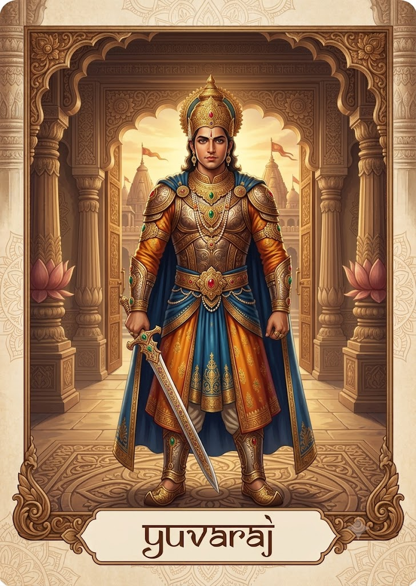
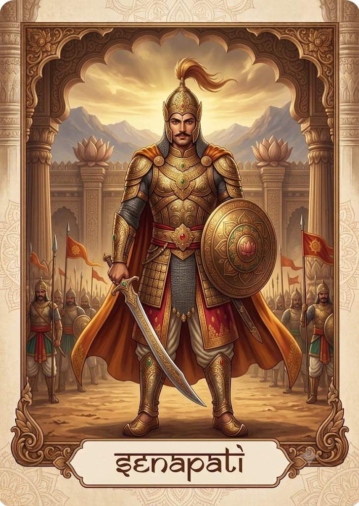
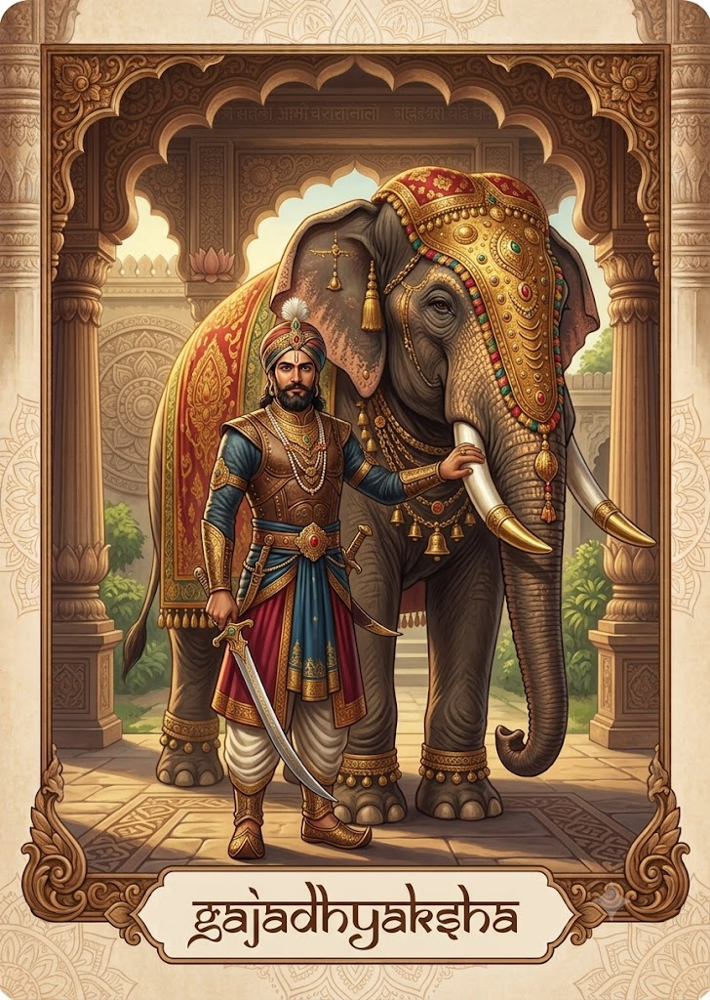
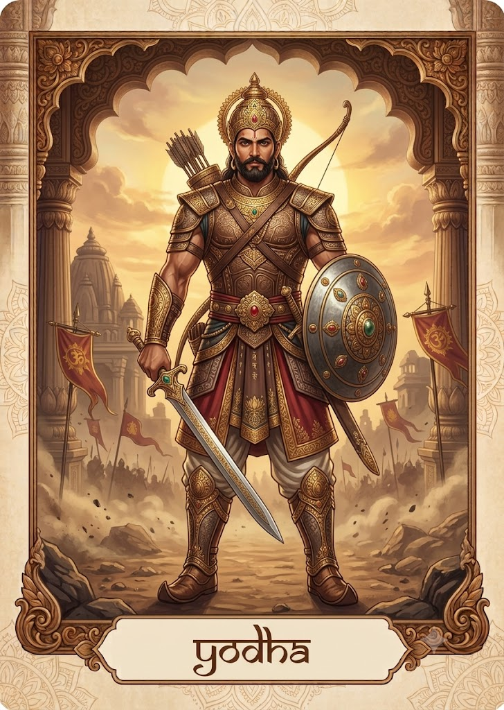
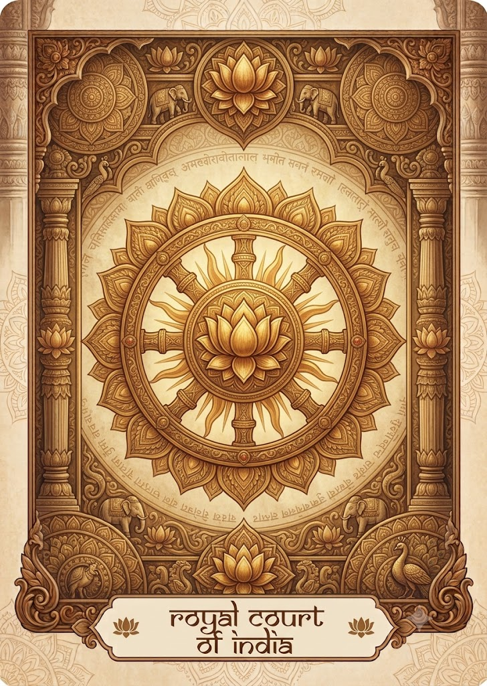
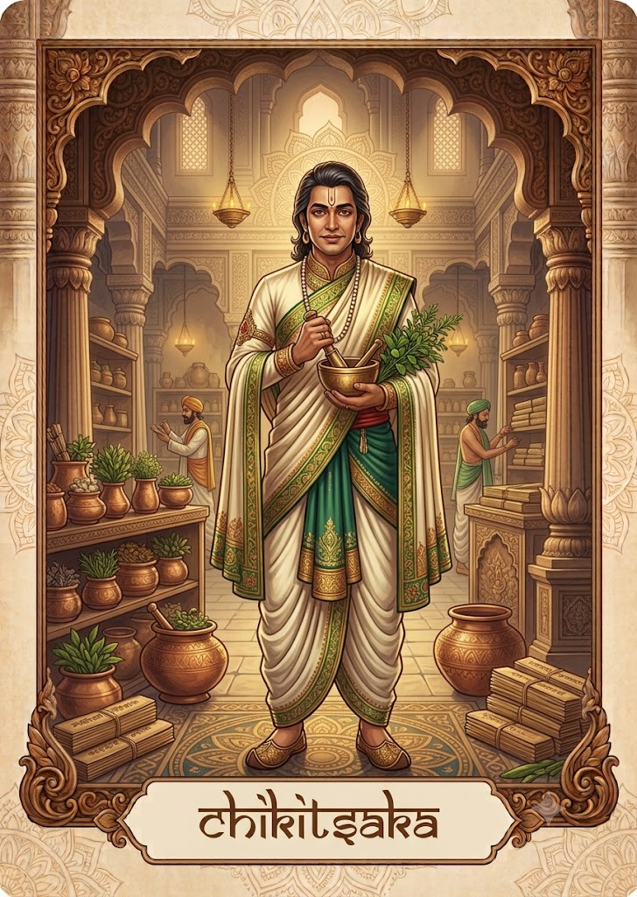
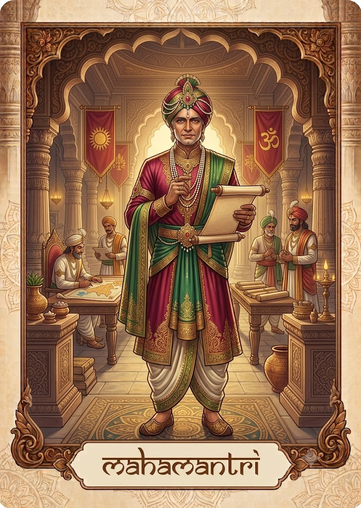
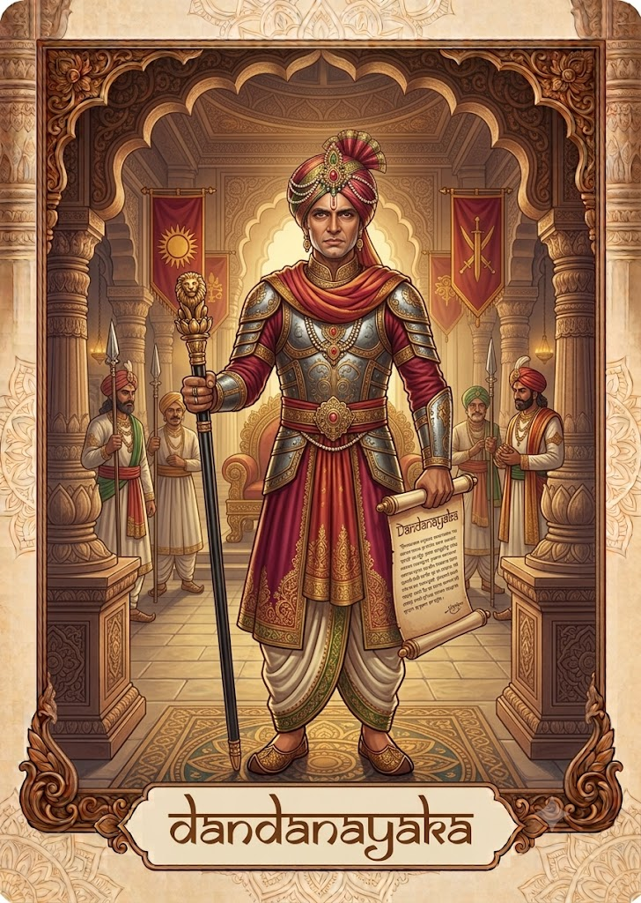
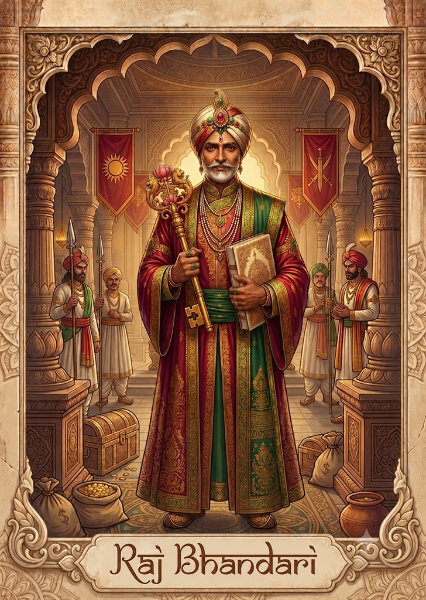
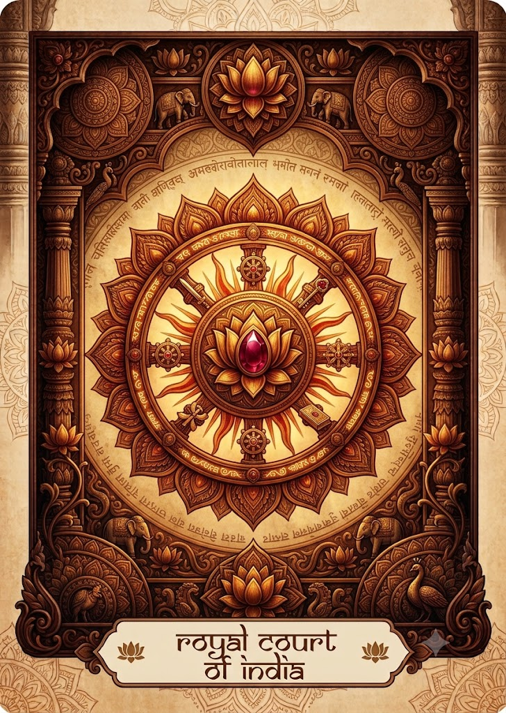

1. Goal
The court is in session. Each courtier holds a hand of royal cards and lays them on the open piles, face down, claiming they belong there. Some claims are true and some are bluffs. Catch a rival lying and they pay for it; accuse an honest courtier and you pay instead.
2. Components
The game uses 62 cards in two decks, with a different back for each deck.
Bluffing cards: 49 (7 of each)





The art may spell Yuvaraja as "Yuvaraj"; it's the same card.
Ability cards: 13





Each player also has a meeple in their own colour. It marks the card they played most recently on a pile.
3. Setup
- Shuffle the 49 bluffing cards. Turn up cards from the top until you have 4 open piles of four different types. A Vidushaka or a duplicate type is set aside and shuffled back in afterwards, so there is never a Vidushaka pile.
- Deal 7 bluffing cards to each player. The rest form the bluffing deck.
- Shuffle the 13 ability cards into a separate ability deck. Players start with no ability cards.
- Pick a random first player. Play goes clockwise.
| Players | In hands | Open piles | Bluffing deck | Ability deck |
|---|---|---|---|---|
| 2 | 14 | 4 | 31 | 13 |
| 3 | 21 | 4 | 24 | 13 |
| 4 | 28 | 4 | 17 | 13 |
| 5 | 35 | 4 | 10 | 13 |
4. Your turn
On your turn you take exactly one action:
- Play a bluffing card onto a pile (section 5).
- Draw a card from the bluffing deck (section 6).
- Challenge another player's card (section 8).
- Use an ability: Mahamantri, Dandanayaka or Raj Bhandari (section 9).
If you have no legal action at all, your turn is skipped.
5. Playing a card
While you hold 2 or more bluffing cards:
- Place one card face down on any open pile.
- On the pile of its own type it's honest; anywhere else it's a bluff. You may bluff even when you could play honestly.
- Vidushaka has no pile, so playing it face down is always a bluff.
Played cards go below the pile's open card, in a column. The open card never changes and is never covered. A new card covers the one before it. The new card gets its owner's meeple, and the covered card loses its meeple for good.
6. Drawing a card
Take the top card of the bluffing deck into your hand. That's your whole turn.
7. The last card
With exactly one bluffing card left, you can never play it face down. Whether you can play it at all depends on the card:
| Your last card is… | You may… |
|---|---|
| a type that has an open pile | play it face up on that pile only |
| Vidushaka | play it face up on any pile you choose |
| a type with no open pile | not play it: challenge, use an ability or draw instead |
A face-up last card covers the card below it, adds to the count, carries your meeple and can't be challenged. Your hand is now empty, so you win.
8. Challenges
Who and what can be challenged
- Only the top card of a pile, and only one that another player placed.
- A card that has ever been covered can never be challenged, even if it becomes the top card again.
- A card can be challenged only once while it stays on the pile.
- A card that goes back to a hand or into the deck is a fresh card, and can be challenged when it's played again.
- You need at least one bluffing card in hand to challenge.
How
- Choose the target card.
- Choose one bluffing card from your hand as your challenger card.
- Reveal the target.
Resolution, in this order
- If the target matches its pile, the challenger loses, whatever their challenger card.
- If it doesn't match, compare the challenger card with the target using the table below. The challenger wins only if their card beats the target. A tie (same type) counts as a loss for the challenger.
The challenger card is shown to everyone only when it decided the result, that is, when the target didn't match.
Who beats whom
Rows are the challenger's card and columns are the revealed target. This is a table, not a ranking: the Vidushaka beats the Raja and Rani, but no one else.
| ↓ beats → | Raja | Rani | Yuvaraja | Senapati | Gajadh. | Yodha | Vidushaka |
|---|---|---|---|---|---|---|---|
| Raja | = | ✓ | ✓ | ✓ | ✓ | ✓ | |
| Rani | = | ✓ | ✓ | ✓ | ✓ | ||
| Yuvaraja | = | ✓ | ✓ | ✓ | ✓ | ||
| Senapati | = | ✓ | ✓ | ✓ | |||
| Gajadhyaksha | = | ✓ | ✓ | ||||
| Yodha | = | ✓ | |||||
| Vidushaka | ✓ | ✓ | = |
Challenger loses
- The challenger keeps their challenger card.
- The challenger draws 1 bluffing card.
- The challenged player picks 1 bluffing card from their hand and gives it to the challenger.
- The revealed card stays on the pile face up, with no meeple. It can't be challenged again. It stays face up even after another card covers it.
Challenger wins (bluff caught)
- The challenger keeps their challenger card, then gives 1 bluffing card of their choice to the bluffer. It may be the challenger card itself.
- The bluffer takes the revealed card back into their hand and draws 1 bluffing card.
- The challenger draws 1 ability card.
- The card underneath becomes the top again, without a meeple, since it was covered before. That pile has no challengeable card until someone plays on it.
After a challenge, play continues with the player after the challenger.
9. Ability cards
You get ability cards only by winning challenges. They're private, and they can never be given away or exchanged. A used ability card goes face up on the ability discard pile; only the top card shows. Raj Bhandari is the exception: it's removed from the game.
| Card | When | Effect |
|---|---|---|
| Mahamantri ×2 | Your turn | Exchange your bluffing hand with any other player's. Each player keeps their own ability cards. |
| Dandanayaka ×5 | Your turn | Another player of your choice draws 2 bluffing cards. It can't be used when nothing at all can be drawn. |
| Raj Bhandari ×1 | Your turn | Place one bluffing card from your hand face up as the open card of a new pile. It must be a type that has no pile yet, and never Vidushaka. The card has no meeple and can't be challenged. The game can therefore have at most 5 piles. If it was your last bluffing card, you win. Raj Bhandari is then destroyed. |
| Chikitsaka ×5 | Out of turn | Only when your bluff has just been caught. You take your revealed card back, but you don't draw and don't receive the challenger's card. The challenger still wins and still draws an ability card. |
10. Empty decks
- Bluffing deck empty: when a draw is needed, shuffle every covered card from the played stacks into a new deck. Each stack's top card and every open card stay where they are. Face-up cards turn face down when shuffled in. If there's still nothing to draw, the draw is skipped, and Draw isn't allowed.
- Ability deck empty: shuffle the ability discard pile into a new ability deck. If there's still none, the draw is skipped.
11. Winning
The first player with zero bluffing cards wins immediately, at any moment. This is checked after every change. You can get there by:
- playing your last card face up (section 7);
- giving away your last bluffing card after a challenge, either as the challenger who won or as the honest player who was challenged;
- using your last bluffing card to open a new pile with Raj Bhandari.
12. Fine print
| Situation | Ruling |
|---|---|
| Challenger card is the same type as a mismatched target | Tie: the challenger loses. |
| Card underneath becomes the top again | It stays without a meeple and can't be challenged. |
| Revealed card gets covered | It stays face up in the stack. It turns face down only if it's shuffled back into the deck. |
| A "give a card" choice when you hold only one card | That card is given automatically. |
| Who sees a given card | Only the giver and the receiver. |
| Your own face-down cards | Hidden like everyone else's. Online, a private toggle can show you your own top cards only. |
| A player has no legal action | Their turn is passed. |
13. Playing online
- Each player uses their own browser. The host creates a room and shares the code; the game starts with 2–5 players.
- The host can fill empty seats with bots (Easy, Medium or Hard). Bots see only their own cards, just like people.
- Timers: 45 seconds per turn and 20 seconds for follow-up choices.
- If your turn runs out, you draw a card automatically (or pass if you can't).
- If a card choice runs out, a random card is chosen.
- If the Chikitsaka choice runs out, the card isn't used.
- After a challenge, everyone sees the reveal for a few seconds before play continues.
- If you disconnect, you can rejoin the same seat. After 2 minutes away, your timer shrinks to 5 seconds. The host can also end the game with no winner.
Quick reference
- Goal: no bluffing cards left.
- One action per turn: Play · Draw · Challenge · Ability.
- Play: face down on any pile. Honest on its own pile; Vidushaka is always a bluff.
- Last card: face up only, on its matching pile (Vidushaka: any pile), or not at all.
- Challenge: only a top card with a meeple, placed by someone else. A matching target means the challenger loses. Otherwise the challenger's card must beat the target; ties lose.
- Challenger loses: draws 1 and receives 1 card from the challenged player.
- Bluff caught: the challenger gives 1 card; the bluffer takes their card back and draws 1; the challenger draws an ability card.
- Abilities: Mahamantri swaps hands · Dandanayaka makes a player draw 2 · Raj Bhandari opens a new pile · Chikitsaka cancels your penalty.